Bob's First Cross
Country School at Quail Run
We had a great day. The
event we planned to go to was cancelled due to rain, so
we quickly changed our plans
and just went out to school at a different farm.
I was nervous for our first
time out, but Bob was wonderful. Our first warm up fence was an X,
and Bob made it obvious
that he wasn't sure why we were there. We trotted up to it, and he stopped
and
walked over it. A few more
times around and we were cantering away and ready for the
vertical and oxer. The only
stop we had out on the course was a drop jump that had a ditch
in it. We trotted up to
it happily, and right at the take-off he spotted the ditch and had to take
a look.
The next two times he hesitated
a little, but jumped to the other side.
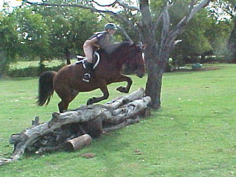
We were a little sloppy starting out.
This was his first solid fence, and he wasn't sure if I really wanted him
to go over it.
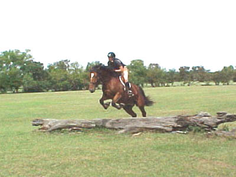
He soon figured it out.
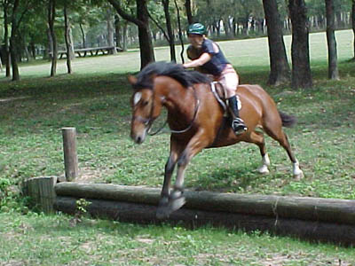
The drop jump with the ditch. I just
grabbed the saddle and gave him his head.
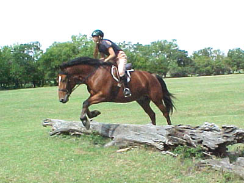
We worked a lot on cantering away..
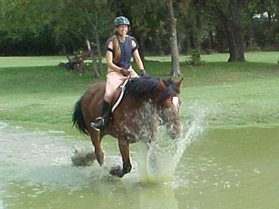
He went into the water a little sideways
the first time, but figured out trotting through, and....
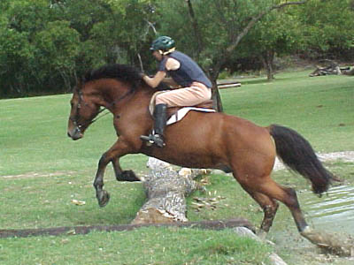
Jumping out. He was very willing about
it all. He did have a habit of jumping into the water, which was a bit
of a surprise.
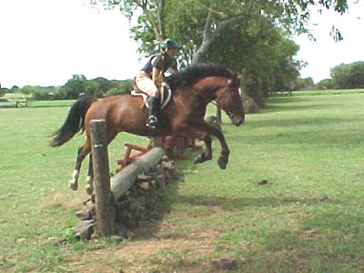
We cantered away and jumped up the
bank.
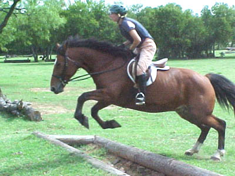
First try over the bigger ditch. No
trouble.
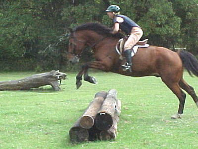
More cantering away practice.
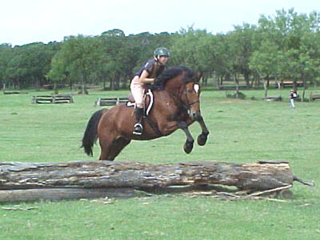
He really gives the feeling of power.
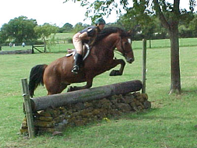
It was just a rub, but he did scare
himself.
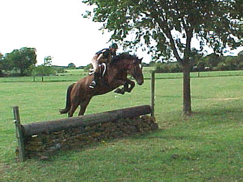
So, he made sure he wouldn't touch
it again.
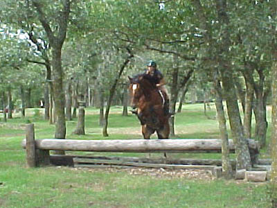
Every jump after the rub he was a
powerhouse. He didn't rush, or act worried, but he'd bascule and have room
to spare.
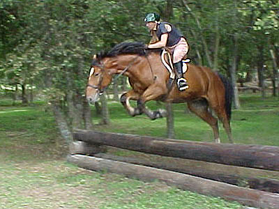
He was just perfect for our last fence.
We cantered to it out of the woods, cantered on landing, and you can see
he did a great job of the actual jump...